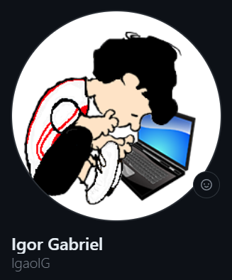
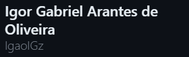

Sobre Mim
Meu nome é Igor Gabriel Arantes de Oliveira, tenho 18 anos e desde pequeno sou apaixonado pelo universo da computação.

Possuo características de um desenvolvedor full stack, pois gosto da programação front-end, back-end e do design web.
Outra das minhas paixões são videogames. Desde cedo sempre gostei muito. A área de design de games é um interesse pessoal inclusive, que une as minhas paixões.
Basquete é outra coisa que amo muito. Comecei a acompanhar faz um ano, desde então sou torcedor do Boston Celtics.
Formação
Ensino Médio Completo
Instituição:
Etec Juscelino Kubitschek de Oliveira
Data de término:
12/2022
Informática para Internet
Instituição:
Etec Juscelino Kubitschek de Oliveira
Data de término:
06/2023
Análise e Desenvolvimento de Sistemas
Instituição:
Escola Politécnica Uninter
Data de término:
10/2025
Linguagens dominadas
HTML/CSS
JavaScript Básico
PHP Intermediário
SQL Intermediário
Python Básico
Ferramentas de Design dominadas
Photoshop Intermediário
Illustrator Intermediário
Inkscape Intermediário
Idiomas
Inglês básico
Portfólio
Perfil Antigo.
Bem-vindo ao meu portfólio!
Neste espaço, você encontrará uma coleção de projetos que representam meu trabalho e paixão. Muitos desses projetos foram realizados em equipe, destacando minha capacidade de colaboração e comunicação.
Embora a maioria deles esteja localizada na minha conta anterior, que pertencia à instituição de ensino técnico onde desenvolvi esses projetos, você não terá dificuldade em explorá-los, pois estão devidamente indicados e organizados.
Então, convido você a fazer um "passeio" por meu portfólio e a descobrir a diversidade e criatividade que permeiam esses projetos. Espero que você aprecie o que verá e que fique inspirado por meu trabalho.
Obrigado por estar aqui!
Perfil Novo
Contato